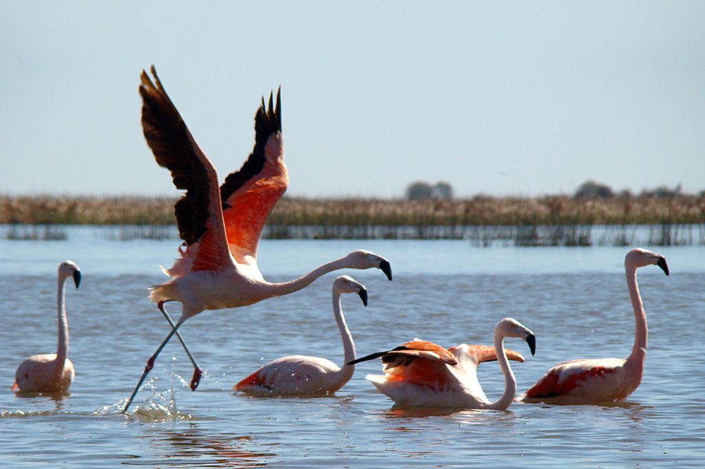
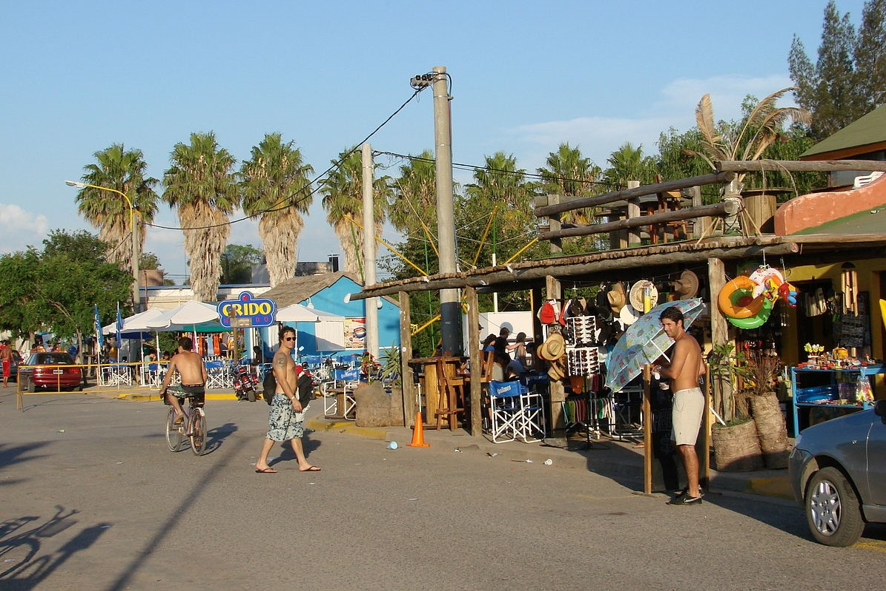

Naturaleza
Recientemente proclamado como área de reserva natural, Mar Chiquita de Anzenusa es reconocida por la posibilidad de avistar aves únicas como los flamencos en estado salvaje, asi como también diversas especiesas que habitan en la laguna. Paseos en bicicleta, caminando o en kayak, siempre son una buena opción para conectarse con la naturaleza.
Gastronomía

Los platos preferido por el público son el pejerrey y la nutria. El primero de ellos, especie que abita las aguas de la mar, y el segundo, proveniente del criadero, al cual se puede acceder mediante una visita guiada. No obstante, a lo largo de la costanera y entre sus calles, una variedad de comedores y restauramtes, ofrece una diversidad de opciones que usted puede elegir a la hora de sentarse a comer.
Paseo y compras
Dependiendo de la fecha en la que usted y su familia, decida visitaros, las ofertas de actividades es variable. Reconocida por los grandes desfiles en sus carnavales de febrero, o por sus shows en vivo duramte todo el verano, Mar Chiquita sin lugar a dudas quiere que usted se lleve un excelente recuerdo de su paso por nuestra ciudad. Muy cerca de nuestra ubicación se encuentra el casino y spa, para aquellos que asi lo prefieran.